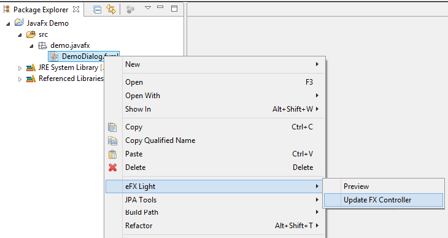

Welcome to eFX - Light
eFX - Light is a lightweight Java FX plugin for eclipse. This plugin contains useful extentions to increase your producativity with Java FX.
Usage:
Open the context menu for a JavaFX file in your project and click 'Update FX Controller'
